Aprendizaje por Refuerzo¶
En la sesión anterior estudiamos los fundamentos de los métodos de aprendizaje por refuerzo basados en gradiente de política, y de forma particular el algoritmo REINFORCE (Williams, 1992)1, que constituye el algoritmo más básico de esta familia de métodos. Vimos que su principal debilidad es su alta varianza. Vamos a ver en esta sesión tres propuestas orientadas a corregir las debilidades de REINFORCE básico: REINFORCE con baseline, Actor-Critic y PPO.
Baseline y reducción de varianza¶
Una de las formas más sencillas de reducir la varianza consiste en introducir una estimación de la función valor y un término llamado "ventaja".
La Función de Ventaja¶
Para introducir la función de ventaja, en primer lugar vamos a ver que el Teorema del Gradiente de Política seguirá siendo válido si restamos cualquier función \(b(s)\) que dependa únicamente del estado (no de la acción) (Sutton et al., 2000)2:
Demostración: Necesitamos mostrar que \(\mathbb{E}\left[ b(s) \nabla_\theta \log \pi_\theta(a|s) \right] = 0\). Como \(b(s)\) no depende de \(a\), es una constante dentro de la esperanza sobre \(a\) y puede sacarse fuera de ella:
Dado que \(\pi_\theta(a \mid s)\) es una distribución de probabilidad, la esperanza de su gradiente logarítmico será siempre 0. Lo podemos ver a continuación, aplicando el "truco del gradiente logarítmico" visto en la sesión anterior:
Por lo tanto, el término completo es 0, y la baseline no afecta a \(\nabla_\theta J(\theta)\).
Vemos entonces que la baseline no introduce sesgo en el gradiente, pero puede reducir drásticamente la varianza si se elige bien.
Una elección óptima para la baseline es:
es decir, la función de valor bajo la política actual. Intuitivamente, \(V^\pi(s_t)\) representa el retorno promedio desde el estado \(s_t\), por lo que \((G_t - V^\pi(s_t))\) captura cuánto mejor o peor fue la acción \(a_t\) respecto al promedio.
Esta cantidad con signo es la función de ventaja (Advantage function), que se define en términos de las funciones \(Q^\pi\) y \(V^\pi\):
donde \(Q^\pi(s_t, a_t) = \mathbb{E}_\pi[G_t \mid s_t, a_t]\) es el valor esperado del retorno tras tomar la acción \(a_t\) en el estado \(s_t\) y seguir la política \(\pi\) a partir de ahí. La función \(V^\pi(s_t) = \mathbb{E}_{a \sim \pi}[Q^\pi(s_t, a)]\) es su promedio sobre todas las acciones posibles. La diferencia entre ambas mide el mérito relativo de la acción \(a_t\) (será positivo si es mejor que el promedio y negativo si es peor).
En la práctica no conocemos \(Q^\pi\) ni \(V^\pi\) exactamente, por lo que usamos estimadores. En REINFORCE, el retorno observado \(G_t\) es un estimador Monte Carlo no sesgado de \(Q^\pi(s_t, a_t)\), de modo que:
es el estimador Monte Carlo de la ventaja que emplearemos en REINFORCE con baseline.
La actualización del gradiente queda entonces:
Intuitivamente, si comparamos dos actualizaciones en el mismo estado \(s\) con y sin baseline, tenemos:
- Sin baseline, una acción que produce \(G_t = 7\) siempre recibe un empuje positivo, incluso si todas las acciones desde \(s\) producen \(\approx 7\) de media (lo que significa que esta acción no es especial).
- Con baseline \(b = V(s) = 7\), la ventaja es \(\approx 0\) y la actualización del gradiente es prácticamente nula, reflejando correctamente que ninguna acción merece ser especialmente reforzada.
Podemos ver eso representado en la Figura 1 para un estado concreto. Al restar la baseline la distribución de las ventajas estará centrada en \(0\), tal como podemos observar en Figura 2.
{kind=link}
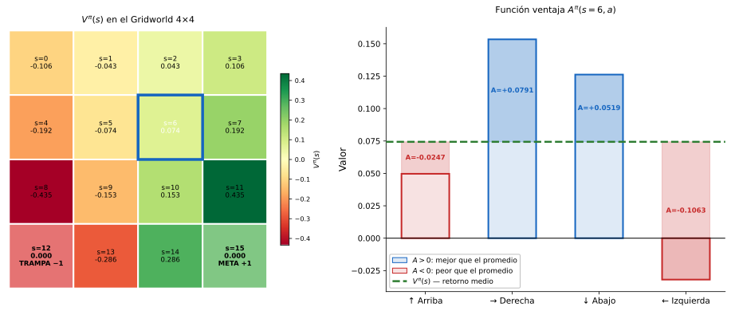
{kind=link}
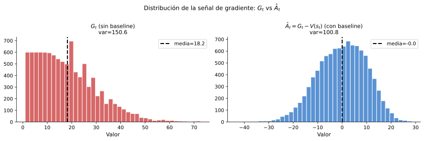
REINFORCE con Baseline¶
Podemos estimar \(V^\pi(s_t)\) a partir de los propios datos manteniendo una red de valor \(V_\phi(s)\) con parámetros \(\phi\). Tras cada episodio, ajustamos \(V_\phi\) a los retornos observados minimizando el error cuadrático medio:
La estimación de la ventaja se convierte entonces en \(\hat{A}_t = G_t - V_\phi(s_t)\).
Es importante destacar que es beneficioso en este caso utilizar tasas de aprendizaje diferentes para la red de política (\(\alpha_\theta\)) y para la red de valor (\(\alpha_\phi\)), ya que su naturaleza es distinta. A continuación, mostramos el algoritmo de REINFORCE con baseline:
Algoritmo: REINFORCE con baseline
Entradas Tasas de aprendizaje \(\alpha_\theta\), \(\alpha_\phi\), descuento \(\gamma\), número de episodios \(K\)
Salida Parámetros de política \(\theta\)
- Inicializar \(\theta\), \(\phi\) aleatoriamente
- Para cada episodio \(i = 1, \ldots, K\):
- Generar trayectoria \((s_0, a_0, r_1, \ldots, s_{T-1}, a_{T-1}, r_T)\) siguiendo \(\pi_\theta\)
- Calcular retornos hacia atrás: \(G_t = r_{t+1} + \gamma G_{t+1}\), \(G_T = 0\)
- Para \(t = 0, 1, \ldots, T-1\):
- \(\hat{A}_t = G_t - V_\phi(s_t)\)
- \(\phi \leftarrow \phi - \alpha_\phi \nabla_\phi\left(G_t - V_\phi(s_t)\right)^2\)
- \(\theta \leftarrow \theta + \alpha_\theta \gamma^t \hat{A}_t \nabla_\theta \log \pi_\theta(a_t \mid s_t)\)
devolver \(\theta\)
En la práctica, REINFORCE con baseline converge notablemente más rápido que REINFORCE puro (ver Figura 3) porque:
- Las actualizaciones están centradas, y la señal del gradiente ya no es uniformemente positiva o negativa.
- La varianza de \(\hat{A}_t\) es mucho menor que la varianza de \(G_t\).
{kind=link}
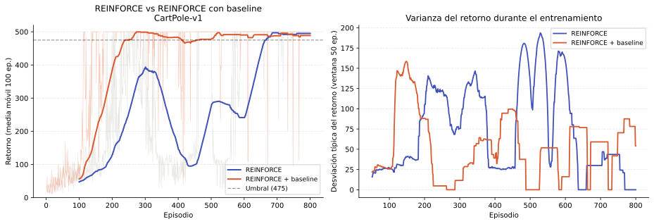
No obstante, seguimos encontrando como limitación que la actualización sigue siendo por episodios (Monte Carlo). Debemos esperar al final de cada episodio para calcular \(G_t\), lo que impide el aprendizaje en línea. Los métodos Actor-Critic abordan esta limitación.
Actor-Critic¶
Como hemos comentado, una desventaja que comparten tanto la versión básica de REINFORCE como su versión con baseline es que son algoritmos offline, en los que el agente debe esperar hasta el final del episodio para actualizar los parámetros de la política. La familia de algoritmos Actor-Critic, propuesta por Sutton y Barto (Sutton & Barto, 2018)3 viene a resolver este problema.
En Actor-Critic, denominamos actor a la política aprendida \(\pi_\theta\), y crítico a la red de valor \(V_\phi\).
Retornos de N pasos¶
Para entender el salto conceptual entre REINFORCE y Actor-Critic conviene introducir brevemente los retornos de \(N\) pasos. En REINFORCE usamos el retorno completo del episodio:
que corresponde a estimar \(Q^\pi(s_t, a_t)\) con todas las recompensas futuras reales. El extremo opuesto es usar únicamente un paso real y sustituir el resto por la estimación del crítico:
Entre ambos extremos existe una familia continua de estimadores de \(n\) pasos:
Con \(N \to \infty\) tenemos el retorno Monte Carlo, mientras que con \(N = 1\) obtenemos el objetivo TD de un paso. Este planteamiento pone de manifiesto que REINFORCE y Actor-Critic son extremos del mismo espectro, y que la elección de \(n\) controla el compromiso entre sesgo (pequeño con \(N\) grande, ya que dependemos menos del crítico) y varianza (pequeña con \(N\) pequeño, porque promediamos menos ruido estocástico del entorno). Actor-Critic corresponde al caso \(N=1\), que veremos a continuación.
Arquitectura de dos redes¶
Hemos visto dos grandes familias de métodos de RL: los métodos basados en valor y los métodos basados en gradiente de política. Los métodos Actor-Critic combinan lo mejor de ambos mundos:
- El actor es la política \(\pi_\theta(a|s)\), actualizada mediante gradiente de política.
- El crítico (critic) es la función de valor \(V_\phi(s)\), actualizada mediante Diferencia Temporal (TD).
El cambio fundamental respecto a REINFORCE con baseline es que el crítico utiliza estimaciones TD en lugar de retornos Monte Carlo. Esto elimina la necesidad de esperar al final del episodio, permitiendo actualizaciones en línea, paso a paso.
La estimación TD de la ventaja en el instante \(t\) es:
Esta expresión recibe el nombre de error TD y se denota habitualmente como \(\delta_t\).
Esta cantidad es exactamente la diferencia entre el objetivo (target) TD \([r_{t+1} + \gamma V_\phi(s_{t+1})]\) y la estimación actual \(V_\phi(s_t)\). La idea es análoga a la regla de actualización de SARSA y Q-Learning ya que en ambos casos se mide la diferencia entre una estimación del valor futuro y la estimación actual. La diferencia es que en los anteriores algoritmos se utilizaba para actualizar \(Q(s,a)\), mientras que aquí se aplica como estimador de la ventaja \(A^\pi(s_t, a_t)\). Para ver por qué es un estimador válido, debemos considerar que si el crítico estuviera perfectamente entrenado, \(V_\phi(s_{t+1}) \approx V^\pi(s_{t+1})\), y entonces:
Es decir, si el crítico estuviera perfectamente entrenado, \(\delta_t\) sería en promedio exactamente \(A^\pi(s_t, a_t)\). En la práctica, el error de aproximación de la red introduce un pequeño sesgo.
El error TD mide cuánto mejor o peor fue la acción tomada respecto a lo que el crítico esperaba en ese estado. En lugar de esperar al final del episodio para conocer el retorno real \(G_t\), usamos la recompensa inmediata \(r_{t+1}\) más la estimación del valor del siguiente estado \(V_\phi(s_{t+1})\) como sustituto del retorno futuro.
A esta técnica de usar la propia estimación aprendida \(V_\phi(s_{t+1})\) como sustituto del retorno futuro, en lugar de esperar al valor real observado al final del episodio, se le denomina bootstrap. La ventaja es que permite actualizar la política en cada paso de tiempo (o cada \(N\) pasos, como hemos visto en el punto anterior) sin esperar al final del episodio, a costa de introducir un pequeño sesgo derivado del error de aproximación del crítico.
De forma análoga a SARSA, así como SARSA hace bootstrap de los valores \(Q\), el crítico hace bootstrap de los valores \(V\). La diferencia es que aquí la estimación con bootstrap sirve para guiar al actor en lugar de actualizar una tabla \(Q\).
En implementaciones basadas en deep learning, el actor y el crítico suelen compartir las capas inferiores (extracción de características) y divergen únicamente en sus cabezas de salida, lo que mejora la eficiencia en el número de parámetros.
Actualización TD del Crítico¶
El crítico se actualiza para minimizar el error TD. Dado que el objetivo TD es \(r_{t+1} + \gamma V_\phi(s_{t+1})\), la pérdida del crítico es:
y la actualización es un paso estándar de descenso por gradiente:
Destacamos que, como ocurre en Q-Learning, el objetivo TD \(r_{t+1} + \gamma V_\phi(s_{t+1})\) se trata como una constante al calcular el gradiente (no se diferencia a través de él), ya que queremos mover \(V_\phi(s_t)\) hacia un objetivo fijo y no mover ambos extremos simultáneamente, por lo que tenemos:
Por este motivo, podemos reescribir la regla de actualización del crítico como:
La actualización del actor utiliza el error TD como estimación de la ventaja:
El factor \(\gamma^t\) que aparecía en REINFORCE ha desaparecido aquí. En el caso episódico con horizonte largo, este factor tiende a cero a medida que avanza el episodio, reduciendo las actualizaciones de los pasos tardíos de forma innecesaria. En la práctica, los métodos Actor-Critic paso a paso omiten \(\gamma^t\) o lo tratan implícitamente mediante el descuento acumulado en el crítico, lo que simplifica la implementación sin afectar significativamente al rendimiento empírico.
{kind=link}
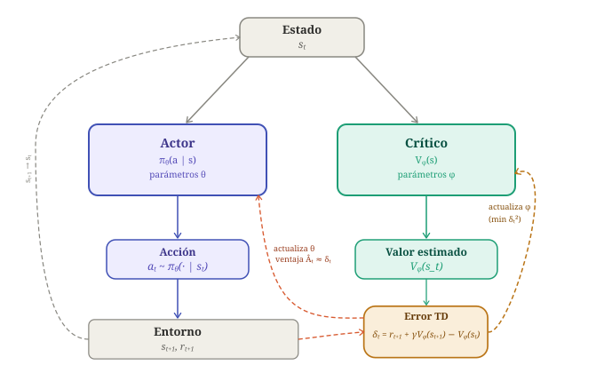
En la Figura 4 se ilustra la arquitectura general de los modelos Actor-Critic.
Algoritmo¶
A continuación mostramos el algoritmo básico Actor-Critic con actualización TD en cada paso:
Algoritmo: Actor-Critic
Entradas: Tasas de aprendizaje \(\alpha_\theta\), \(\alpha_\phi\), descuento \(\gamma\), número de episodios \(K\)
Salida: Política \(\pi_\theta\), función de valor \(V_\phi\)
- Inicializar \(\theta\), \(\phi\) aleatoriamente
- Para cada episodio \(i = 1, \ldots, K\):
- \(s_t \leftarrow \text{estado inicial}\)
- Repetir hasta que el episodio termine:
- Muestrear \(a_t \sim \pi_\theta(\cdot \mid s_t)\)
- Ejecutar \(a_t\) y observar \(r_{t+1}\), \(s_{t+1}\), \(\text{done}\)
- Calcular error TD:
- \(\delta_t = r_{t+1} - V_\phi(s_t)\) si \(\text{done}\)
- \(\delta_t = r_{t+1} + \gamma V_\phi(s_{t+1}) - V_\phi(s_t)\) en otro caso (aplicando bootstrap)
- Actualización del crítico: \(\phi \leftarrow \phi + \alpha_\phi \, \delta_t \, \nabla_\phi V_\phi(s_t)\)
- Actualización del actor: \(\theta \leftarrow \theta + \alpha_\theta \, \delta_t \, \nabla_\theta \log \pi_\theta(a_t \mid s_t)\)
- \(s_t \leftarrow s_{t+1}\)
devolver \(\theta\), \(\phi\)
El algoritmo anterior realiza la estimación en cada paso, utilizando el retorno inmediato \(r_{t+1}\) y haciendo bootstrap del futuro con la estimación del crítico \(V_\phi(s_{t+1})\), lo cual se conoce como método TD(0). Sin embargo, podríamos generalizarlo para utilizar retornos de \(N\) pasos. En este caso, una vez el agente haya realizado \(N\) pasos de simulación utilizaremos las \(N\) recompensas obtenidas \(r_{t+1}, \ldots, r_{t+N}\) y estimaremos el valor futuro del siguiente estado \(s_{t+N}\) mediante bootstrap con \(V_\phi(s_{t+N})\):
A continuación mostramos el algoritmo generalizado para \(N\) pasos. En este caso, el agente recopila un bloque de \(N\) transiciones antes de actualizar (a este bloque se le denomina rollout) y utiliza las \(N\) recompensas observadas para calcular un retorno más informado antes de hacer bootstrap con \(V_\phi(s_{N})\). Este concepto de rollout será central en PPO, donde se recopila un rollout de longitud fija y se realizan múltiples épocas de actualización sobre él antes de descartarlo.
Algoritmo: Actor-Critic con N pasos
Entradas: Tasas de aprendizaje \(\alpha_\theta\), \(\alpha_\phi\), descuento \(\gamma\), longitud de secuencia \(N\), número de pasos de entorno \(K\)
Salida: Política \(\pi_\theta\), función de valor \(V_\phi\)
- Inicializar \(\theta\), \(\phi\) aleatoriamente
- Mientras pasos de entorno \(< K\):
- Recopilar una secuencia \(\tau\) de hasta \(N\) transiciones \((s_t, a_t, r_{t+1}, s_{t+1})\) siguiendo \(\pi_\theta\), deteniéndose antes si el episodio termina
- Restablecer a \(0\) los gradientes: \(g_\theta \leftarrow 0\), \(g_\phi \leftarrow 0\)
- Para \(t = 0, 1, \ldots, N-1\):
- Calcular retorno de \(N\) pasos desde \(t\): \(G_t = \sum_{k=t}^{N-1} \gamma^{k-t} r_{k+1}\)
- Aplicar bootstrap si \(s_N\) no es terminal: \(G_t \leftarrow G_t + \gamma^{N-t} V_\phi(s_N)\)
- Calcular ventaja: \(\delta_t = G_t - V_\phi(s_t)\)
- Acumular gradiente del crítico: \(g_\phi \leftarrow g_\phi + \delta_t \, \nabla_\phi V_\phi(s_t)\)
- Acumular gradiente del actor: \(g_\theta \leftarrow g_\theta + \delta_t \, \nabla_\theta \log \pi_\theta(a_t \mid s_t)\)
- Actualización del crítico: \(\phi \leftarrow \phi + \alpha_\phi \, g_\phi\)
- Actualización del actor: \(\theta \leftarrow \theta + \alpha_\theta \, g_\theta\)
devolver \(\theta\), \(\phi\)
{kind=link}
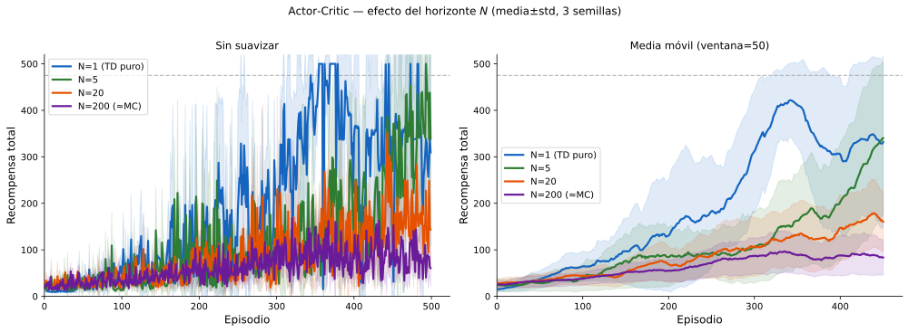
Comparación con REINFORCE¶
La tabla siguiente resume las diferencias clave:
| Propiedad | REINFORCE | REINFORCE+Baseline | Actor-Critic TD(0) | Actor-Critic (N) |
|---|---|---|---|---|
| Estimación de ventaja | \(G_t\) | \(G_t - V_\phi(s_t)\) | \(\delta_t\) (TD) | \(G_t^{(N)} - V_\phi(s_t)\) |
| Frecuencia de actualización | Fin de episodio | Fin de episodio | Cada paso | Cada \(N\) pasos |
| Sesgo | Ninguno (MC) | Ninguno (MC)\(^*\) | Mayor (TD) | Menor que TD |
| Varianza | Alta | Media | Baja | Media-baja |
| Maneja entornos no episódicos | ✗ | ✗ | ✓ | ✓ |
(\(^*\)) No introduce sesgo el estimador de la ventaja, al utilizar Monte Carlo. La red de valor \(V_\phi\) sí que puede introducir un pequeño error de aproximación.
En la práctica, Actor-Critic converge más rápido y de forma más estable que REINFORCE porque el crítico TD proporciona una señal de baja varianza y actualizada continuamente, al coste de un pequeño sesgo introducido por el bootstrap.
La versión con \(N\) pasos además tiene la ventaja de permitir paralelizar la recopilación de rollout, lo cual es la base de los algoritmos A3C y A2C que veremos en la siguiente sección.
Variantes y mejoras¶
El algoritmo Actor-Critic básico presentado opera con un único entorno y actualiza en cada paso. En la práctica se han propuesto varias mejoras sobre este esquema:
A3C (Asynchronous Advantage Actor-Critic) (Mnih et al., 2016)4 lanza \(N\) trabajadores en paralelo, cada uno con su propia copia del entorno, que actualizan los parámetros de forma asíncrona e independiente. El paralelismo reduce el tiempo de entrenamiento y la correlación entre muestras consecutivas.
A2C (Advantage Actor-Critic) es una variante síncrona de A3C, con la que en lugar de actualizar de forma asíncrona, espera a que todos los trabajadores completen un fragmento de trayectoria y promedia sus gradientes antes de actualizar:
Este promedio es equivalente a aumentar el tamaño del batch en aprendizaje supervisado, reduciendo la varianza del gradiente sin modificar la lógica subyacente del algoritmo. En la práctica A2C produce resultados equivalentes o mejores que A3C con una implementación más sencilla.
Regularización por entropía: La idea de añadir un bonus de entropía para fomentar la exploración fue introducida por Williams (Williams, 1992)1 y posteriormente popularizada por A3C y A2C (Mnih et al., 2016)4. Estos algoritmos introducen un término \(\beta \nabla_\theta H(\pi_\theta(\cdot|s_t))\) en la actualización del actor, dirigido a fomentar la exploración. Se trata de un bonus de entropía, donde \(H(\pi) = -\sum_a \pi(a|s) \log \pi(a|s)\) es la entropía de la política. Maximizar la entropía incentiva que la política permanezca estocástica y evita una convergencia prematura a una política determinista subóptima. Se trata de una versión más suave de la exploración \(\epsilon\)-greedy que usamos en Q-Learning. El coeficiente \(\beta\) es un hiperparámetro pequeño (p.ej. \(0{,}01\)), que regula la influencia de este bonus. Este término se ha convertido en un componente estándar de las implementaciones modernas, y con él la actualización del actor queda de la siguiente forma:
PPO, que veremos a continuación, parte de A2C y añade mejoras orientadas a estabilizar el entrenamiento y mejorar la eficiencia de muestras.
Proximal Policy Optimization (PPO)¶
Podemos ver Proximal Policy Optimization (PPO) (Schulman et al., 2017)5 como una evolución de A2C que resuelve dos problemas prácticos importantes que veremos a continuación: la inestabilidad por actualizaciones grandes y la ineficiencia en el uso de datos. Constituye en la actualidad el principal algoritmo del estado del arte en Aprendizaje por Refuerzo.
Problemas de los métodos estándar de gradiente de política¶
Una cuestión previa que debemos tener en cuenta sobre los métodos basados en gradiente de política es que nuestro dataset se genera a partir de la propia política que estamos estimando. Una mala política puede producir que no se generen datos con la calidad suficiente como para poder estimar una mejor política, teniendo de esta forma el problema de la "pescadilla que se muerde la cola". Por ello, hemos visto que es importante una buena inicialización que genere una política que nos permita explorar todas las posibles acciones. Sin embargo, a pesar de inicializar de forma adecuada, la dependencia de la política para generar datos de entrenamiento puede llevarnos a otros problemas que veremos a continuación.
Inestabilidad por actualizaciones grandes¶
Los métodos Actor-Critic actualizan la política aplicando un paso de gradiente sobre las estimaciones de ventaja del rollout actual. Esto plantea un problema que puede parecer menor pero que resulta crítico en la práctica: si el paso de gradiente desplaza \(\theta\) demasiado, la nueva política \(\pi_{\theta_\text{new}}\) puede volverse muy diferente de \(\pi_{\theta_\text{old}}\).
Para entender por qué esto es peligroso, pensemos en lo que ocurre cuando el gradiente es grande y la tasa de aprendizaje no lo compensa suficientemente. El optimizador da un paso grande en la dirección de mayor mejora estimada, y una vez que \(\theta\) ha cambiado mucho, la política podría entrar en una región del espacio de parámetros donde se comporta de forma completamente diferente, y potencialmente mucho peor, sin que el gradiente pueda detectarlo a tiempo para escapar de esa zona. Este fenómeno se conoce como olvido catastrófico, y consiste en que el agente pierde comportamientos aprendidos previamente y puede no ser capaz de recuperarlos.
Esto motiva la idea de los métodos de región de confianza (trust region), que buscan restringir cada actualización para que la nueva política se mantenga cerca de la antigua en un sentido bien definido, garantizando que el agente mejora de forma gradual y estable.
Ineficiencia en el uso de datos¶
El segundo problema es de naturaleza diferente, y viene de que los métodos Actor-Critic y A2C son on-policy, lo que significa que los datos del rollout deben haber sido generados por la política actual \(\pi_\theta\). En consecuencia, cada rollout se usa para una única actualización y luego se descarta, porque en cuanto \(\theta\) cambia, los datos ya no son representativos de la nueva política.
Esto hace que estos métodos sean muy ineficientes en el uso de datos, ya que cada transición \((s_t, a_t, r_{t+1}, s_{t+1})\) se emplea una sola vez. En entornos donde la interacción con el entorno es costosa, como por ejemplo en robótica física o en simulaciones lentas, esto supone un problema serio.
Sería deseable poder realizar múltiples actualizaciones sobre el mismo rollout antes de descartarlo. Pero si actualizamos \(\theta\) varias veces, la política cambia en cada iteración y los datos, que se recopilaron con \(\pi_{\theta_\text{old}}\), dejan de ser on-policy. Usarlos directamente introduciría un sesgo, porque las acciones se muestrearon con probabilidades distintas a las que asigna la política actual.
{kind=link}
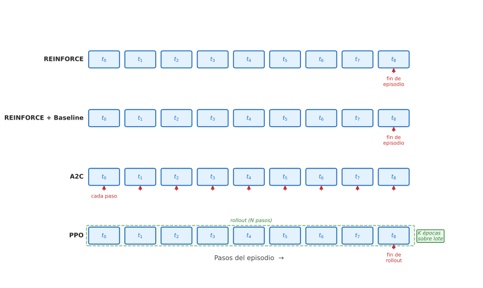
Importance Sampling¶
La solución al segundo de los anteriores problemas es el importance sampling, una técnica estadística que permite estimar el valor esperado de una función bajo una distribución \(\pi_\theta\) usando muestras generadas por una distribución diferente \(\pi_{\theta_\text{old}}\), siempre que se corrija el desajuste multiplicando cada muestra por el cociente de probabilidades:
Podemos verlo de forma intuitiva de la siguiente forma: si la nueva política asigna el doble de probabilidad a una acción que la antigua, esa acción está infrarrepresentada en los datos del rollout (con la nueva política se tomaría la acción con mayor frecuencia), y hay que compensarlo dándole el doble de peso. Si la nueva política asigna la mitad de probabilidad, la acción está sobrerrepresentada y hay que reducir su influencia a la mitad.
Los métodos de gradiente de política basados en ventaja optimizan implícitamente el objetivo \(J(\theta) = \mathbb{E}_t[\hat{A}_t]\), es decir, queremos que la política elija acciones con ventaja positiva. Para poder reutilizar datos de \(\pi_{\theta_\text{old}}\) aplicamos importance sampling sobre este objetivo, tomando \(f(a_t) = \hat{A}_t\) en la expresión anterior, con lo que tenemos:
donde definimos el cociente de probabilidades:
Cuando \(r_t(\theta) = 1\) ambas políticas asignan la misma probabilidad a \(a_t\) y no es necesaria ninguna corrección. Cuando \(r_t(\theta) > 1\) la nueva política considera \(a_t\) más probable que la antigua, y cuando \(r_t(\theta) < 1\) la considera menos probable.
Es importante destacar que en el cociente \(r_t(\theta)\) el denominador \(\pi_{\theta_\text{old}}(a_t \mid s_t)\) es una constante, calculada una vez cuando se recopila el rollout y congelada a partir de ese momento. El numerador \(\pi_\theta(a_t \mid s_t)\) es la única parte que cambia cuando actualizamos \(\theta\).
Por lo tanto, maximizar \(J(\theta) = \mathbb{E}_t[r_t(\theta)\hat{A}_t]\) es equivalente a ajustar \(\pi_\theta\) para que asigne mayor probabilidad a las acciones con ventaja positiva (\(\hat{A}_t > 0\)) y menor probabilidad a las acciones con ventaja negativa (\(\hat{A}_t < 0\)), exactamente como hacíamos en REINFORCE. La diferencia es que ahora el denominador actúa como una escala: si \(\pi_{\theta_\text{old}}\) ya asignaba probabilidad alta a una acción, el cociente crece más despacio y la actualización es más conservadora. Si \(\pi_{\theta_\text{old}}\) asignaba probabilidad baja, el cociente puede crecer muy rápido con un pequeño cambio en \(\theta\), lo que sin restricciones produciría una actualización demasiado grande.
Gracias a importance sampling, podemos optimizar \(J(\theta)\) usando datos de \(\pi_{\theta_\text{old}}\), lo que en principio permite hacer múltiples actualizaciones sobre el mismo rollout.
Sin embargo, el importance sampling solo funciona bien cuando las dos distribuciones (\(\pi_\theta\) y \(\pi_{\theta_\text{old}}\)) no son demasiado diferentes. Si \(\theta\) se aleja mucho de \(\theta_\text{old}\), los cocientes \(r_t(\theta)\) se vuelven muy grandes o muy pequeños, la corrección pierde fiabilidad estadística y el estimador del gradiente se vuelve inestable. Dicho de otra forma, sin restricciones, maximizar \(\mathbb{E}_t[r_t(\theta) \hat{A}_t]\) empujaría \(r_t(\theta)\) hacia el infinito siempre que \(\hat{A}_t > 0\), lo que produciría exactamente el olvido catastrófico descrito en el primero de los problemas planteados anteriormente.
Realmente los dos problemas planteados convergen en la misma solución, y es que necesitamos mantener \(r_t(\theta)\) cerca de \(1\), es decir, mantener la nueva política cerca de la antigua. Esto resuelve simultáneamente la inestabilidad de las actualizaciones grandes y garantiza que el importance sampling sea una corrección válida para las épocas adicionales.
El objetivo con clipping¶
PPO implementa esta restricción con una idea simple pero efectiva, que consiste en que en lugar de añadir una penalización explícita cuando \(r_t(\theta)\) se aleja de \(1\) (como hacía su predecesor TRPO (Schulman et al., 2015)6, que requería optimización de segundo orden), simplemente recorta el cociente para que el gradiente se anule fuera de la región de confianza \([1-\epsilon, 1+\epsilon]\):
donde \(\epsilon\) es un hiperparámetro pequeño (típicamente \(0.1\) ó \(0.2\)) y \(\text{clip}(x, l, u) = \max(l, \min(u, x))\).
El comportamiento del \(\min\) depende del signo de la ventaja. Analicemos cada caso por separado:
Cuando \(\hat{A}_t > 0\), la acción fue mejor que el promedio, y queremos reforzarla aumentando la probabilidad de \(a_t\):
- Si \(r_t \leq 1+\epsilon\): La probabilidad de \(a_t\) no ha aumentado todavía más de un factor \(1+\epsilon\) respecto a \(\pi_{\theta_\text{old}}\), por lo que el recorte no está activo y el gradiente sigue empujando en la dirección correcta.
- Si \(r_t > 1+\epsilon\): La política ya ha aumentado la probabilidad de \(a_t\) en más de un factor \(1+\epsilon\). El clipping detiene la actualización, haciendo que aumentar \(\pi_\theta(a_t \mid s_t)\) más allá de ese punto ya no mejore el objetivo recortado. El efecto práctico al aplicar clipping será que al pasar a ser la función objetivo una constante \((1+\epsilon)\hat{A}_t\), el gradiente respecto a \(\theta\) será \(0\), y por lo tanto se detiene la actualización.
Cuando \(\hat{A}_t < 0\) la acción fue peor que el promedio, y queremos penalizarla reduciendo la probabilidad de \(a_t\):
-
Si \(r_t \geq 1-\epsilon\): La probabilidad de \(a_t\) no ha disminuido más de un factor \(1-\epsilon\), por lo que el clipping no está activo y el gradiente sigue penalizando la acción.
-
Si \(r_t < 1-\epsilon\): La política ya ha reducido la probabilidad de \(a_t\) en más de un factor \(1-\epsilon\). El clipping detiene la actualización, haciendo que reducir \(\pi_\theta(a_t \mid s_t)\) más allá de ese punto ya no mejore el objetivo recortado. En este caso la función objetivo pasa a ser una constante \((1-\epsilon)\hat{A}_t\) y se detiene la actualización de la política.
{kind=link}
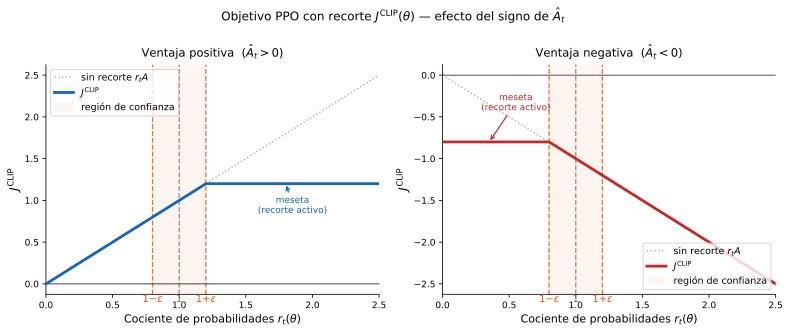
En ambos casos la idea es la misma: PPO permite actualizar la política libremente mientras el cambio sea moderado \(r_t \in [1-\epsilon, 1+\epsilon]\), pero deja de dar señal de gradiente en cuanto la política se ha alejado lo suficiente de \(\pi_{\theta_\text{old}}\) (ver Figura 7). Esto garantiza que el importance sampling siga siendo una corrección válida en todas las épocas del rollout.
Podemos considerar este recorte como una restricción unilateral que desincentiva los movimientos fuera de la región de confianza sin penalizar los movimientos conservadores.
{kind=link}
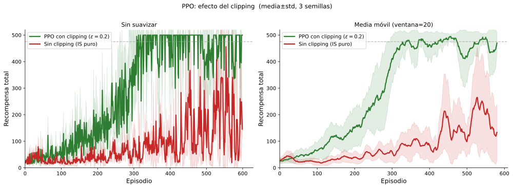
Estimación Generalizada de Ventaja (GAE)¶
En Actor-Critic básico estimábamos la ventaja con el error TD de un paso (\(N=1\)), y en la versión de \(N\) pasos con un retorno fijo de horizonte \(N\). Ambas opciones presentan un problema en el contexto de PPO, ya que el rollout tiene una longitud fija \(N\), y elegir un único horizonte para estimar la ventaja obliga a aceptar el sesgo de TD puro (\(N=1\)) o la varianza de Monte Carlo (\(N \to \infty\)) sin posibilidad de ajuste. Esto es especialmente crítico en PPO porque las ventajas \(\hat{A}_t\) se calculan una sola vez al inicio, antes de las épocas de actualización, y se reutilizan en todas ellas. Si la estimación de ventaja es ruidosa (alta varianza), las múltiples épocas de actualización amplifican ese ruido en lugar de promediarlo, produciendo actualizaciones inestables. Si es sesgada (TD puro con crítico impreciso), todas las épocas optimizan en la dirección equivocada.
En la práctica, PPO no estima la ventaja con un único error TD de un paso, sino con una combinación ponderada de estimadores de todos los horizontes \(n \in [1, N]\) dentro del rollout, conocida como Estimación Generalizada de Ventaja (Generalized Advantage Estimation, GAE) (Schulman et al., 2016)7. De esta forma, GAE busca un compromiso óptimo entre sesgo y varianza mediante un parámetro \(\lambda\) que ajusta la influencia de cada horizonte en la combinación, sin necesidad de fijar un horizonte concreto. Vamos a ver a continuación cómo se define esta estimación.
Como vimos en la sección de retornos de \(N\) pasos, el estimador de \(n\) pasos de la ventaja es:
Como hemos comentado, usar un \(n\) pequeño introduce más sesgo (dependemos más del crítico, que puede ser inexacto) pero menos varianza. Usar un \(n\) grande reduce el sesgo pero aumenta la varianza. En lugar de elegir un único \(n\), GAE promedia todos los estimadores con pesos que decaen exponencialmente con \(n\), controlados por un parámetro \(\lambda \in [0,1]\):
Esta expresión puede calcularse eficientemente en una única pasada hacia atrás sobre el rollout. Definiendo \(\delta_t = r_{t+1} + \gamma V_\phi(s_{t+1}) - V_\phi(s_t)\) como el error TD de un paso, se puede demostrar que:
El parámetro \(\lambda\) controla directamente el compromiso sesgo-varianza:
- \(\lambda = 0\): \(\hat{A}_t^{\text{GAE}} = \delta_t\) (TD puro, un paso). Baja varianza, sesgo mayor si el crítico no es exacto.
- \(\lambda = 1\): \(\hat{A}_t^{\text{GAE}} = G_t^{(N)} - V_\phi(s_t)\) (retorno de \(N\) pasos completo). Sin sesgo adicional del crítico, pero mayor varianza.
- \(0 < \lambda < 1\) (Interpolación suave). En la práctica se usan valores como \(\lambda = 0.95\), que dan más peso a los errores TD próximos y reducen progresivamente la influencia de los más lejanos.
{kind=link}
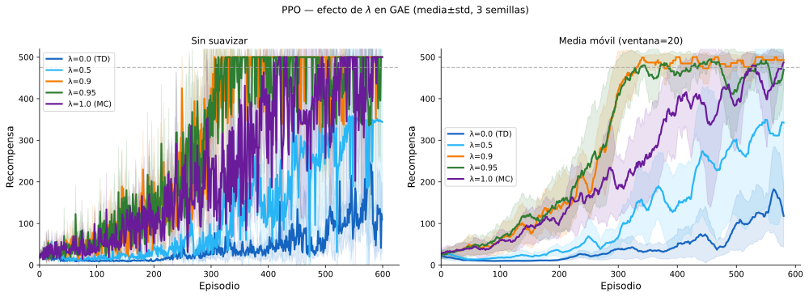
PPO en la práctica¶
PPO combina todas las ideas anteriores en un único bucle de entrenamiento con dos fases claramente diferenciadas:
Fase 1: Rollout. Se recopilan \(N\) pasos de interacción con el entorno siguiendo la política actual, se calculan las ventajas GAE y se congela \(\theta_\text{old} \leftarrow \theta\).
Fase 2: Actualización. Se realizan \(K_\text{epoch}\) épocas de optimización sobre el rollout, procesando los datos en minilotes de tamaño \(M\). En cada minilote se calcula el cociente \(r_t(\theta) = \pi_\theta(a_t|s_t) / \pi_{\theta_\text{old}}(a_t|s_t)\) con la política actual (que va cambiando en cada época) y la política congelada. El clipping garantiza que aunque se hagan múltiples épocas, la política no se aleje demasiado de \(\pi_{\theta_\text{old}}\), manteniendo válido el importance sampling.
La pérdida completa de PPO combina tres términos:
donde:
- \(J^{\text{CLIP}}(\theta)\): Objetivo de política. Dado que buscamos maximizar esta función objetivo, pero estamos minimizando la pérdida \(\mathcal{L}^{\text{PPO}}\), le ponemos un signo negativo.
- \(\mathcal{L}^{\text{VF}}(\phi) = \mathbb{E}_t[(V_\phi(s_t) - \hat{G}_t)^2]\): Pérdida del crítico (error cuadrático medio respecto al retorno objetivo \(\hat{G}_t = \hat{A}_t + V_\phi(s_t)\)).
- \(H(\pi_\theta)\): Bonus de entropía para mantener la exploración. PPO adopta este elemento que se introdujo en predecesores como A2C.
- \(c_1, c_2\): Coeficientes de ponderación.
Algoritmo: PPO (Proximal Policy Optimization)
Entradas: Parámetro de recorte \(\epsilon\), épocas por actualización \(K_\text{epoch}\), tamaño de minilote \(M\), pasos por rollout \(N\), coeficientes \(c_1\), \(c_2\), parámetro GAE \(\lambda\), descuento \(\gamma\)
Salida: Parámetros de política \(\theta\), parámetros de valor \(\phi\)
- Inicializar \(\theta\), \(\phi\) aleatoriamente
- Repetir hasta convergencia:
- Fase de rollout: recopilar \(N\) transiciones \((s_t, a_t, r_{t+1}, s_{t+1})\) siguiendo \(\pi_\theta\)
- Calcular errores TD: \(\delta_t = r_{t+1} + \gamma V_\phi(s_{t+1}) - V_\phi(s_t)\) (con \(V_\phi(s_{t+1})=0\) si \(s_{t+1}\) es terminal)
- Calcular ventajas GAE en pasada hacia atrás: \(\hat{A}_t = \sum_{l \geq 0}(\gamma\lambda)^l \delta_{t+l}\)
- Calcular retornos objetivo: \(\hat{G}_t = \hat{A}_t + V_\phi(s_t)\)
- Congelar política antigua: \(\theta_\text{old} \leftarrow \theta\)
- Para cada época \(k = 1, \ldots, K_\text{epoch}\):
- Para cada minilote de tamaño \(M\) del rollout:
- Calcular cocientes: \(r_t(\theta) = \pi_\theta(a_t \mid s_t) / \pi_{\theta_\text{old}}(a_t \mid s_t)\)
- Calcular pérdida: \(\mathcal{L} = -\mathbb{E}\!\left[\min\!\left(r_t \hat{A}_t,\, \text{clip}(r_t, 1\!-\!\epsilon, 1\!+\!\epsilon) \hat{A}_t\right)\right]\) \(+ c_1\, \mathbb{E}\!\left[(V_\phi(s_t) - \hat{G}_t)^2\right] - c_2\, \mathbb{E}\!\left[H(\pi_\theta(\cdot \mid s_t))\right]\)
- Actualizar \(\theta\), \(\phi\) por descenso de gradiente sobre \(\mathcal{L}\)
devolver \(\theta\), \(\phi\)
El algoritmo presentado sigue la formulación del paper original (Schulman et al., 2017)5, donde actor y crítico se optimizan conjuntamente mediante una única función de pérdida. Esto es especialmente conveniente cuando ambas redes comparten capas inferiores. En implementaciones donde actor y crítico son redes completamente separadas, es equivalente actualizarlos de forma independiente, como se hace en Actor-Critic básico, omitiendo el coeficiente \(c_1\).
{kind=link}
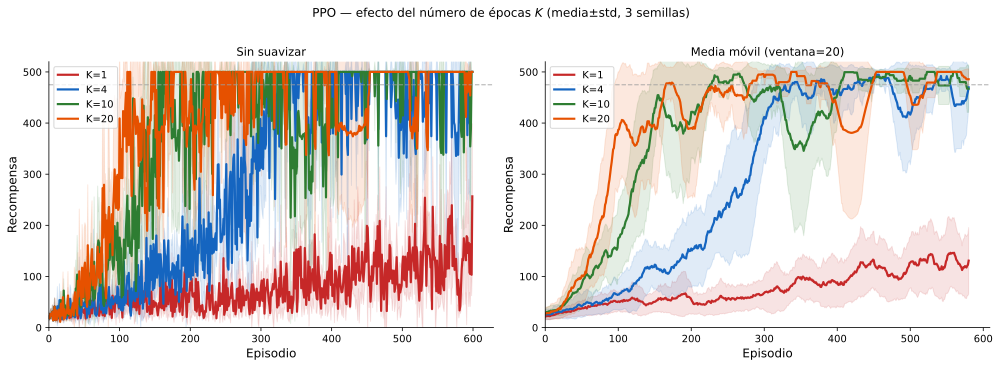
Consideraciones finales¶
PPO aborda directamente los dos problemas que se planteaban al inicio:
- Estabilidad: El clipping impide actualizaciones catastróficas sin necesitar la optimización de segundo orden que requería su predecesor TRPO, lo que lo hace sencillo de implementar y computacionalmente eficiente.
- Eficiencia de muestras: Las múltiples épocas sobre el mismo rollout, corregidas por importance sampling y limitadas por el clipping, extraen mucho más aprendizaje de cada interacción con el entorno que A2C.
Se ha convertido en el estándar de facto en RL profundo para control continuo, robótica y de manera especialmente relevante en el Aprendizaje por Refuerzo a partir de Retroalimentación Humana (RLHF), la técnica utilizada para ajustar los grandes modelos de lenguaje como ChatGPT, Claude o Gemini para que sigan instrucciones y se alineen con las preferencias humanas.
{kind=link}
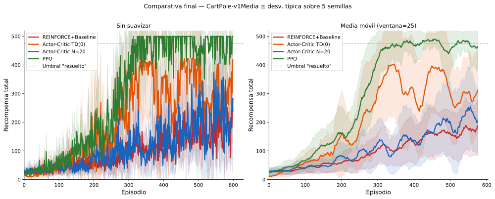
Resumen¶
La siguiente tabla sitúa todos los algoritmos de Aprendizaje por Refuerzo vistos tanto en la asignatura de Agentes Inteligentes como en Aprendizaje Avanzado:
| Algoritmo | Paradigma | Sin modelo | En línea | Función V/Q | Función de política |
|---|---|---|---|---|---|
| Iteración de Valor | PD | ✗ | ✗ | \(V(s)\) | derivada |
| Monte Carlo MDP | Basado en valor | ✓ | ✗ | \(Q(s,a)\) | \(\epsilon\)-greedy |
| SARSA | Basado en valor | ✓ | ✓ | \(Q(s,a)\) | \(\epsilon\)-greedy |
| Q-Learning | Basado en valor | ✓ | ✓ | \(Q(s,a)\) | \(\epsilon\)-greedy |
| DQN | Basado en valor | ✓ | ✓ | \(\hat{Q}_\theta(s,a)\) | \(\epsilon\)-greedy |
| REINFORCE | Basado en política | ✓ | ✗ | — | \(\pi_\theta(a \mid s)\) |
| REINFORCE+B | Basado en política | ✓ | ✗ | \(V_\phi(s)\) | \(\pi_\theta(a \mid s)\) |
| Actor-Critic | Actor-Critic | ✓ | ✓ (TD(0) o N pasos) | \(V_\phi(s)\) | \(\pi_\theta(a \mid s)\) |
| PPO | Actor-Critic | ✓ | ✓ (por rollouts) | \(V_\phi(s)\) | \(\pi_\theta(a\mid s)\) |
La idea fundamental de este tema es que optimizar la política directamente, en lugar de derivarla de una función de valor, abre la puerta a los espacios de acción continuos, a las políticas óptimas estocásticas y a las nuevas técnicas de alineamiento que dan soporte a los grandes modelos de lenguaje actuales.
-
Williams, R. J. (1992). Simple statistical gradient-following algorithms for connectionist reinforcement learning. Machine Learning, 8(3--4), 229--256. https://doi.org/10.1007/BF00992696 ↩↩
-
Sutton, R. S., McAllester, D., Singh, S., & Mansour, Y. (2000). Policy gradient methods for reinforcement learning with function approximation. Advances in Neural Information Processing Systems, 12, 1057--1063. ↩
-
Sutton, R. S., & Barto, A. G. (2018). Reinforcement learning: An introduction (2nd ed.). MIT Press. ↩
-
Mnih, V., Badia, A. P., Mirza, M., Graves, A., Lillicrap, T., Harley, T., Silver, D., & Kavukcuoglu, K. (2016). Asynchronous methods for deep reinforcement learning. Proceedings of the 33rd International Conference on Machine Learning, 48, 1928--1937. ↩↩
-
Schulman, J., Wolski, F., Dhariwal, P., Radford, A., & Klimov, O. (2017). Proximal policy optimization algorithms. arXiv Preprint arXiv:1707.06347. ↩↩
-
Schulman, J., Levine, S., Abbeel, P., Jordan, M., & Moritz, P. (2015). Trust region policy optimization. Proceedings of the 32nd International Conference on Machine Learning (ICML 2015), 37, 1889--1897. https://proceedings.mlr.press/v37/schulman15.html ↩
-
Schulman, J., Moritz, P., Levine, S., Jordan, M. I., & Abbeel, P. (2016). High-dimensional continuous control using generalized advantage estimation. 4th International Conference on Learning Representations (ICLR 2016). https://arxiv.org/abs/1506.02438 ↩